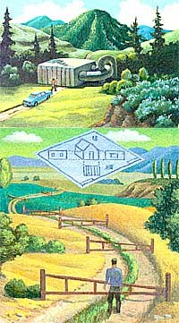

Land and Law
What are your rights in a land dispute?
In 1972, my wife and her late husband purchased 3,800 acres in a western state. For many years, the only access to the east side teas an old road off of a county road that the original homesteader used. An aerial photo taken in 1952 shows the road well within the fence line for about a half mile to the homestead.
My wife's family used this road for many years to access the property for hunting and fishing and other recreation. Even after they moved out of state, they returned from tune to time. The only other access was the long way around or through a section of state land, if the old jeep trails through it were even passable.
During the mid '70s, the adjacent land was developed into a subdivision of approximately ten-acre parcels. This sub division engulfed the old road. The family continued to use the road up until 1991. During her late husbands illness, my wife sold much of the property but held on to part of it.
When we married, my wife and I moved to the township sixteen miles away to begin building on the property. Everything was fine for a while. Then we moved a fifth wheel onto the property, and also a 10' by 50' mobile office. We were blockaded at the subdivision entrance by two members of the subdivision home-owners association. I couldn't reason with them, and my son had to get the sheriff. The sheriff escorted us to the property gate, approximately three miles, and stated that we bad legal access to our land.
Shortly thereafter, we had to go to California to help our daughter after an earthquake and were gone for over year.
In the meantime, the ten acres at our entry gate was purchased, and the owner sealed the gate with wire and dumped a pile of dirt in the road on his side of the fence. He then sent my son a letter telling him to stay of the ten acres or go to court. My son is not the legal owner, so he passed the letter on to me. We returned to reason with the association to no avail. We even offered to pal' our share of the road maintenance.
As a result of limited finances, we refrained from legal counsel, and since we were essentially land-locked, they wouldn't even let us remove the RV and trailer. They are sitting there deteriorating to this day.
Meanwhile, the portion of land my wife sold was turned into a subdivision. The road building was difficult and the developer finally abandoned the project. During this time, a legal easement and road was created to our west entrance. It is ten miles farther and only accessible in dry weather we haven't been able to build on our land because cement trucks and propane trucks refuse to use the new road. We desire to be a good neighbor.
Can you help?
-R. A.
Name and address withheld
Easements are the boon and bane of many country property owners! It sounds as if you originally had an easement by prescription to the land: that is, an access route that was used for so long that access could not be denied. Such an easement does not usually have to be used on a daily basis, only used consistently according to the type of land. For example, if the land was used for recreational purposes, then sporadic use of the easement a enough to maintain rights of access. But in many states when you cease using this type of easement, you may be in danger of losing it.
Easement law is complicated, however, and it varies from state to state. It is possible that an easement used for recreational purposes will not be acceptable for residential purposes, although if the land was an old homestead, your easement will probably provide residential access.
Financial considerations not with-standing, you must check with an attorney to determine your rights. Be sure to take care in locating an attorney well versed in easements. Most are not, and many do not even realize easements are practically a field unto themselves.
Mother consideration: in many states if you allow a situation to continue for a certain number of years without taking any action, you give up any rights you may have had to pursue the matter. Do not delay on this. Seek an attorney and consult him or her immediately. It may be possible that your attorney can explain your rights to the concerned parties and that will be the end of it. Good luck.
I purchased a ten-acre patented mining claim in the mountains of Colorado. The land is located within a national forest. The access road was originally closed off by the Forest Service, but a few years before I bought the land, someone bad torn the sign down. The real estate company assured me the Forest Service could not deny access to my land. I wrote to the forest service asking permission to use the road. They wrote back saying it could take years to receive road access permission from them, and they demanded to see a building permit, even though I had not mentioned building in my letter. I did not reply to this and so far am continuing to use the road.
After all that, I called a building inspector and asked what I needed to do to get a building permit. He told me I could build up to 160 square feet without a permit. He then asked me where the land was. When I tried to explain the location and that there are other cabins in the area, he suddenly changed his opinion and recommended that I not build at all. He also stated that if there is an existing cabin on the land, I could not even add a nail to it without a permit. All I wanted to know is if I could put up a small cabin on the land, but I just got a runaround and no answer.
Could you please answer my questions? (1) Can the Forest Service deny me access or is the road grandfathered in? The mine was founded in 1899). (2) Is the building inspector wrong about building a cabin on the land when be doesn't know where it is located? Can I build a cabin without electricity and water? (3) How do I determine if I have water rights to my land?
-Jackie Arnold
Red Cliff, Colorado
One should always verify legal access and other rights before buying real estate. If you want to build on land, you should always verify that you can do so before the purchase is finalized. To answer your questions:
(1) About your access: Allan Grimshaw, with the U.S. Forest Service, Aspen Ranger District, was very helpful in clarifying the access question for you. He states that the Forest Service roads provide public access, and that includes landowner access for parcels within the national forest. However, the forest supervisor may close some roads on a seasonal basis to protect them from damage due to seasonal instability. During such closures, a landowner usually my continue to use the road but my be responsible for my damage he or she my cause. When writing such closures, the supervisor my exempt landowners, or require them to obtain a special use permit allowing them to use the road.
Mr Grimshaw cautions that the Forest Service is not in the business of providing roads or maintenance like the county, but generally does not deny public access over its roads. He also warns that certain areas in the state are very confusing, with mining claims that pre-dated the national forest, non-existing roads still on record, and non-official roads that do exist. You should check directly with your local ranger district about your road.
You might also check with the title company that issued your title report when you purchased the land. They my very well show an easement of record that provides access.
You could also check with the U.S. Government Bureau of Land Management (BLM). They directly oversee and keep records on mining claims and my be able to locate records of an access road that serves the claim.
(2) Regarding a building permit: the State of Colorado and each county has its own set of zoning roles and building regulations that apply to each specific area. You should take your latest land tax bill to the county building department to show exactly where your land is located. They can then determine which zoning and/or other regulations apply to your land for building purposes, and what you will need to do to obtain a building permit. If your land is located near Red Cliff in Eagle County, you could talk to jean Garren in the Eagle County Planning Department. Her phone number is (970) 328-8893. It my take a day or more to research the regulations that apply directly to your land. If it is in another county, you must check with that county's building department.
(3) Water rights: unlike other property rights, water rights are not a matter of title in many states, including Colorado. To find out about water rights, you must contact the State of Colorado, State Engineers Office, Division of Water Resources, in Denver. Once you give them your legal description, they can tell you if you have existing water rights or if they are available and what it will take to get them.
My question a about the payment of property taxes and the relevance, if any, of those payments to the ownership of the property. Here's my situation:
My sister and I inherited a piece of property thirty years ago. Neither of us lives on the property, nor are we geographically near it. We live in different states. For many years, I was struggling to survive as a single parent. During that rime, my sister, who is single, managed the property to the extent of paying the taxis from a fund accumulated by the rental of a house on the property. Now that my children are grown, I spend time once a year on the property, maintaining the house and grounds.
I became aware that the bank account that handled the rental income and expenses was in my sister's name only, whereas the account itself was our joint money. After some effort, I arranged to have the account put in both our names, but she continues to pay the taxes from the account. The tax bills are sent to her and tax records are in her name only.
Recently, in order to obtain aerial views of the property, I was asked to submit a tax receipt as proof of ownership and, of course, I had none. Added to this, a friend of mine says that the payment of taxes for so long by one person gives that person some son of claim to the land beyond our joint ownership. Could this be so? I tried at one time to have the local tax office, where the property is located, add my name to the tar record and to the tax receipts. They refused and said that any question of ownership of the property is easily answered in the will by which we acquired it. There is no deed.
I feel uneasy about all this and would appreciate your advice. This is very important to me as my sister and I view the property very differently She has wanted to sell it but I refused. I love the land and would not want to pan with it. I am not financially able to buy her half.
-Name and address withheld
New Jersey
You are concerned about the possibility of a claim by your sister through adverse possession, but that my not be too likely. In order to make that type of claim, all of the adverse possession requirements must be met, not simply payment of taxes. To be sure about this, discuss it with an attorney in the state in which the land is located.
You did not say in which state the property is located. Determine who normally searches tide in that state and seek advice from the entity that handles such matters. That my be a title company, attorney, or individual belonging to a title search association. Once you reach the right entity, it shouldn't be too difficult to prove your co-ownership via the will and learn how to have your name recorded as a co-owner. You my have to pay for a consultation, but if it is a simple matter of recording an appropriate document, it shouldn't be too costly.
Even though you and your sister differ philosophically regarding the land, it sounds as if she has been diligent in trying to manage the rental and tax funds. If she wants to sell and you can't afford to buy her share outright, you might try offering her installment payments. Be sure to formalize agreements with a land sales contract and record it.
Send your questions to "Country Real Estate, " c/o Mother Earth News, P.O. Box 129, Arden, NC 28704, or via email at MEarthNews@aot.com, Enclose a photo and we'll make you famous. Please keep in mind that state laws vary and that this column is no substitute for local legal advice.
|
 ILLUSTRATIONS: KIM DREW |
|
|